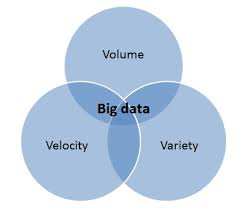

Big data
Importance of big data
The Three Vs of Big Data
Big data challenges
Examples of big data
The Three Vs of Big Data

| Volume |
The amount of data matters. With big data, you’ll have to process high volumes of low-density, unstructured data. This can be data of unknown value, such as Twitter data feeds, clickstreams on a webpage or a mobile app, or sensor-enabled equipment. For some organizations, this might be tens of terabytes of data. For others, it may be hundreds of petabytes. |
| Velocity |
Velocity is the fast rate at which data is received and (perhaps) acted on. Normally, the highest velocity of data streams directly into memory versus being written to disk. Some internet-enabled smart products operate in real time or near real time and will require real-time evaluation and action. |
| Variety |
Variety refers to the many types of data that are available. Traditional data types were structured and fit neatly in a relational database. With the rise of big data, data comes in new unstructured data types. Unstructured and semistructured data types, such as text, audio, and video, require additional preprocessing to derive meaning and support metadata. |